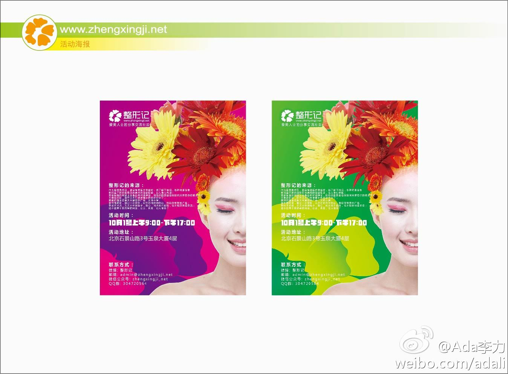
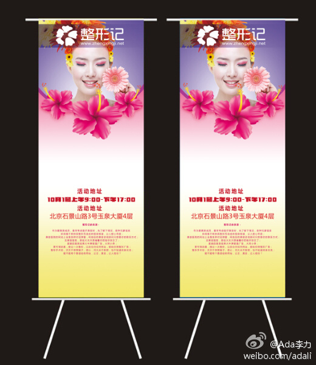
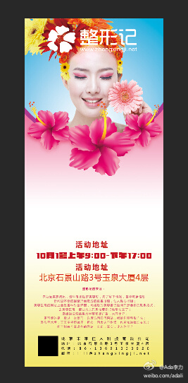
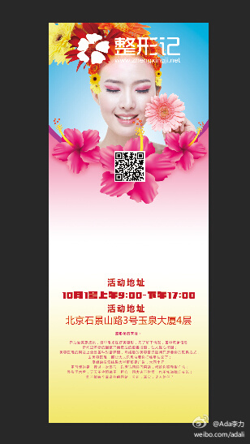
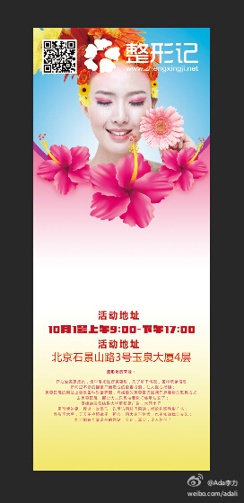
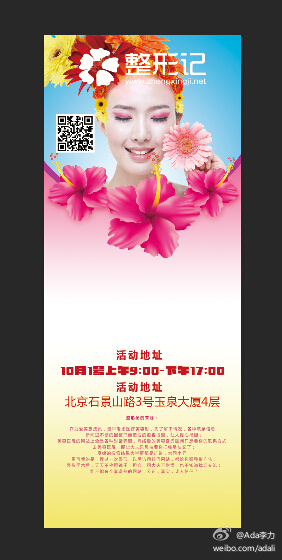

这两天借着更新个人博客 网页链接 的时机，一直折腾wordpress, 越玩越觉得它功能强大，强大在于数量巨大得插件和主题，很多最新的社会化媒体工具也都有提供。－ 真心感觉能把这些工具玩得转及用好就很不错，不需要造更多轮子了。
//@陈沙克:这估计就是国内的CMS，基本都死的差不多的原因吧。你用一段时间，你就发现wordpress的升级，做的太好，基本所有插件都不会影响你升级。@Ada李力:这两天借着更新个人博客 网页链接 的时机，一直折腾wordpress, 越玩越觉得它功能强大，强大在于数量巨大得插件和主题，很多最新的社会化媒体工具也都有提供。－ 真心感觉能把这些工具玩得转及用好就很不错，不需要造更多轮子了。
【跟设计师的沟通】在猪八戒网上做了个整形记的LOGO的竞标。中标的设计师，继续做VI基础设计和一些VI应用，包括名片，易拉宝，PPT, EDM这些。 设计师发给我第一版海报，花团锦簇的感脚。 于是跟设计师说太花，而且我要的海报是易拉宝形式的，要能当演讲者背景。于是… 网页链接 
云服务器升级比自己的电脑升级还方便。访问整形记网站时有些卡，问了不同地方的用户，有同样的反馈，应该不是网络的问题，于是直接加了内存，几分钟就搞定了。要是自己的电脑加内存，至少得两天功夫吧，连订货到安装。
 网页链接 的时机，一直折腾wordpress, 越玩越觉得它功能强大，强大在于数量巨大得插件和主题，很多最新的社会化媒体工具也都有提供。－ 真心感觉能把这些工具玩得转及用好就很不错，不需要造更多轮子了。
网页链接 的时机，一直折腾wordpress, 越玩越觉得它功能强大，强大在于数量巨大得插件和主题，很多最新的社会化媒体工具也都有提供。－ 真心感觉能把这些工具玩得转及用好就很不错，不需要造更多轮子了。